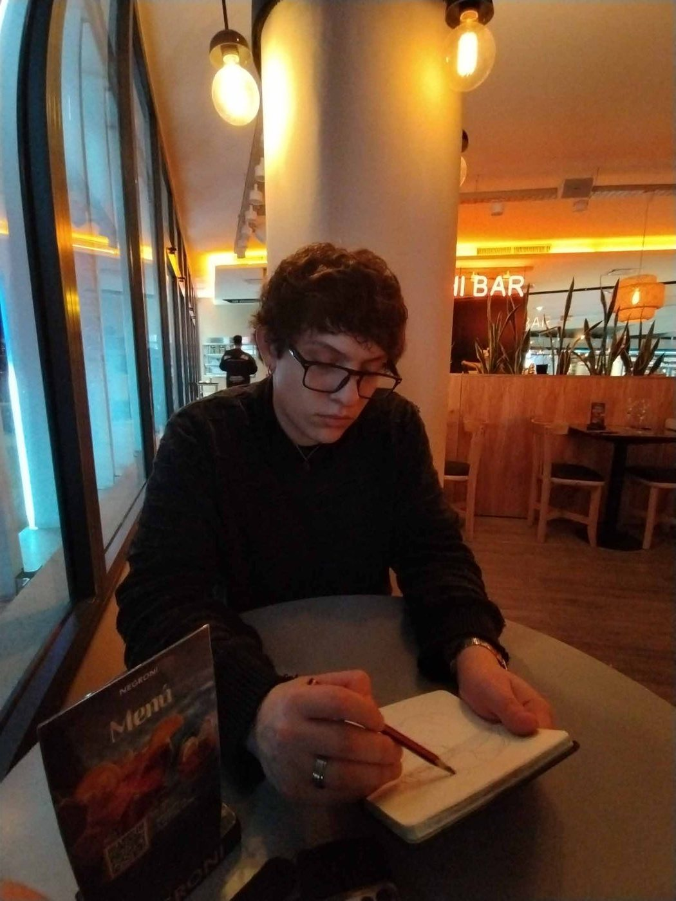

Máximo
Romero
Artista visual · Ilustración · Diseño gráfico · Motion
Sobre mí

Máximo José Romero
Mi nombre es Máximo José Romero, tengo 19 años y nací en Córdoba, Argentina. Dibujo desde que tengo memoria y nunca dejé de hacerlo: de una u otra manera, el dibujo siempre formó parte de mi vida.
Dibujar es lo que más amo, lo que me entretiene y me da paz. No lo hago solo porque me guste o porque desde chico se me daba bien, sino porque es mi forma de canalizar emociones y conectarme profundamente conmigo mismo. Dibujo porque lo necesito, porque es parte de mí.
Este último año me dediqué al estudio de la carbonilla y, a su vez, trabajé mucho en una perspectiva que juega de manera brusca con la deformación del campo visual. Busco generar una visión que transmita movimiento exagerado, intentando plasmar en el dibujo la idea de dinamismo y fluidez. Para ello, utilizo con frecuencia cuerpos orgánicos que me permiten expresar esa energía en cada trazo.
Este portfolio reúne 2 obras de gran tamaño y 25 obras realizadas en carbonilla sobre hojas A4. Cada una de ellas busca ilustrar y transmitir escenas de la vida cotidiana, ventanas hacia distintas situaciones y personas que habitan lo común y lo azaroso. La intención es poner en valor lo bello de la cotidianeidad y la aparente banalidad de la vida, resaltando la poesía que existe en los gestos y momentos simples del día a día.
Contacto
- Instagram @maxdiibujos
- 351 211-5333
- Córdoba, Argentina